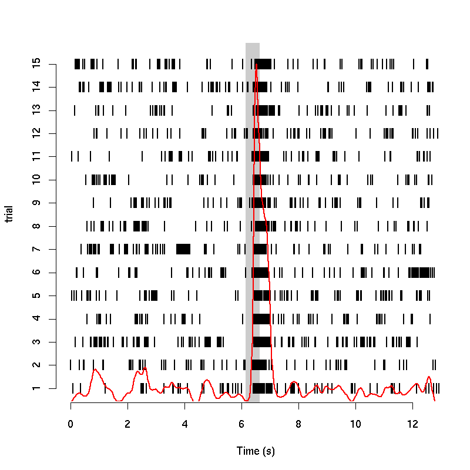
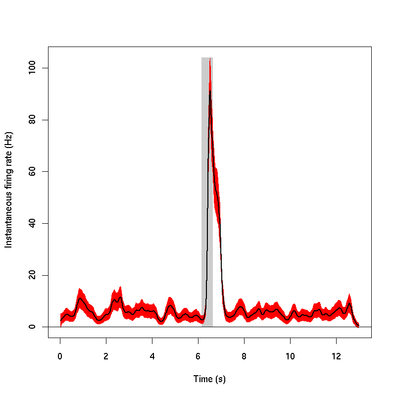
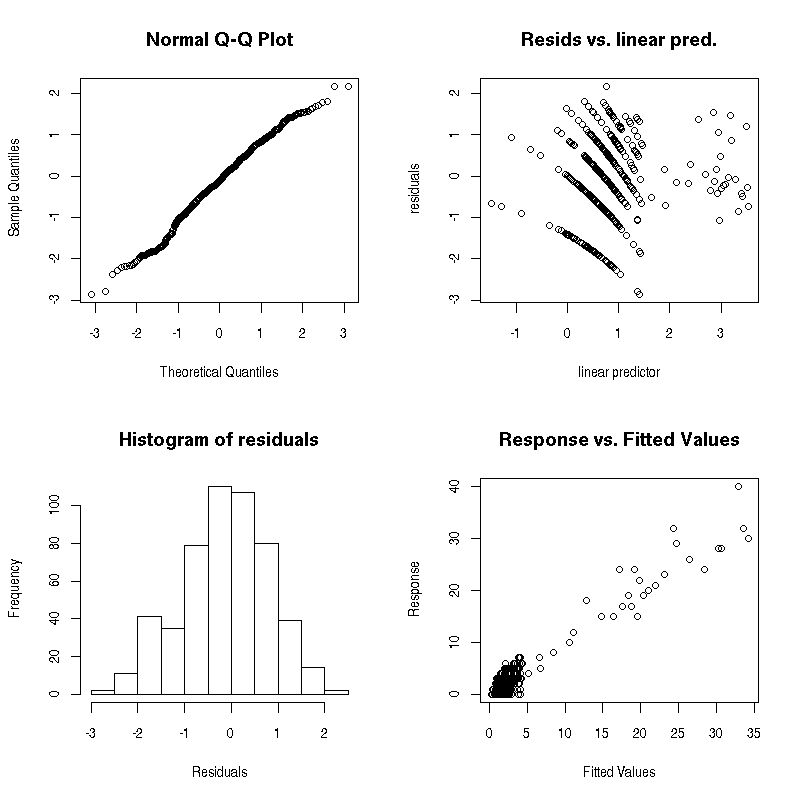
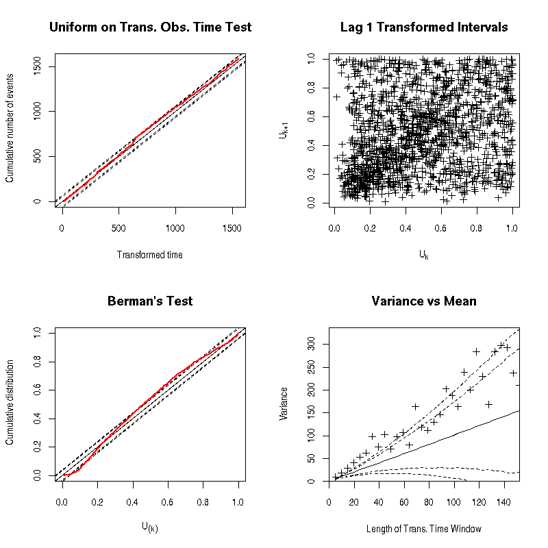

e070528citronellalN1
Raster plot of e070528citronellalN1 with superposed PSTH

Fit summary of e070528citronellalN1
Fit performed after binning the "collapsed train" with a bin size of: 0.025, assuming no trial effect and an inhomogenous Poisson model. Parameters used: k=100 and bs="cr".
Family:poisson
Link function:log
Formula:
Count ~ s(Time, k = k, bs = bs)
Parametric coefficients:
| Estimate | std.err. | t ratio | Pr(>|t[) |
| (Intercept) | 0.78814 | 0.03167 | 24.89 | < 2.22e-16 |
|
Approximate significance of smooth terms:
| edf | chi.sq | p-value |
| s(Time) | 62.1 | 2234.6 | < 2.22e-16 |
|
Adjusted r-sq. = 0.896 GCV score =
Scale estimate = 1 n = 520
The statistics of the relative change x 100 of the predicted rate over a bin of size: 0.025 are:
| Min. | 1st Qu. | Median | Mean | 3rd Qu. | Max. |
0.0503 | 1.9780 | 4.0110 | 5.6260 | 7.2580 | 39.2000 |
|
Predicted firing rate under the inhomogenous Poisson hypothesis for e070528citronellalN1

GAM goodness of fit diagnostics of e070528citronellalN1

Ogata's tests on the time transformed spike trains of e070528citronellalN1

Generated on: Mon Oct 29 15:11:15 2007 - R2HTML